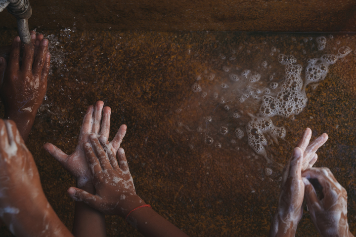
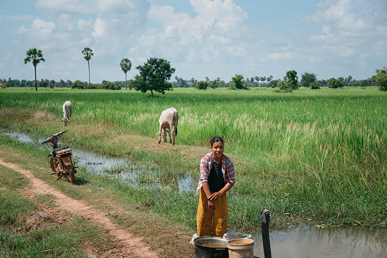
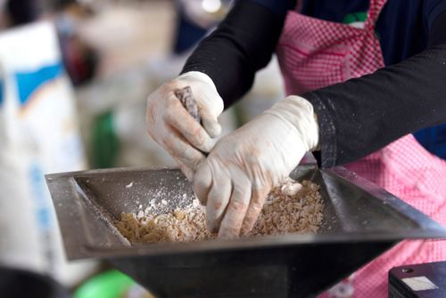
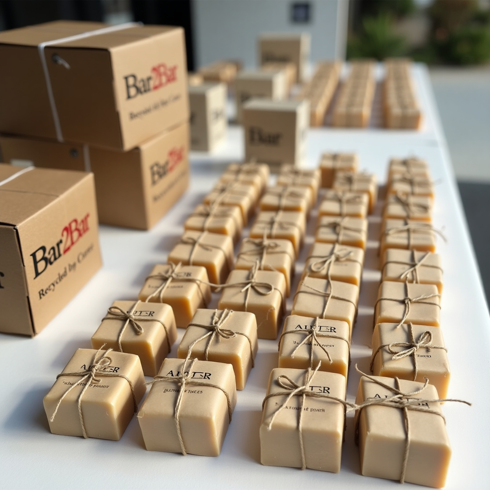

The Issues
Lack of access to soap remains a critical factor in fighting the spread of preventable diseases worldwide. In some areas of the developing world, only 1% of households have soap for handwashing. Bar2Bar seeks to address the critical need for hygiene.

Hygiene
3 billion people do not have access to soap at home. 800 million children do not have access to soap at schools.

Environmental
Soap factories globally generate about 25,000 metric tons of soap waste each year - which go directly to landfills.

Economic
One in every ten women is living in extreme poverty, a figure that is set to increase by 236 million by 2030.
Our Vision
At Bar2Bar, our vision is to transform everyday waste into everyday wellness. We aim to create a circular ecosystem where discarded hotel soaps are not seen as waste, but as a second chance — a chance to be reborn into something pure, purposeful, and planet-friendly. Through innovation, hygiene, and handmade craftsmanship, we will turn hotel waste into meaningful products that serve people and protect the Earth. We believe sustainability isn’t just a choice — it’s a responsibility. And every Bar2Bar soap carries that responsibility forward — from one bar to another.
🧼Bar2Bar – Our Soap Recycling Journey

Step 1: Collection from Hotels
Bar2Bar will partner with hotels to collect used soap bars that are otherwise thrown away. Our trained staff will regularly visit these hotels and carefully gather partially-used soap from guest rooms and housekeeping stations.

Step 2: Sanitization & Quality Check
Once the soap arrives at our hygiene unit, it will undergo a deep sanitization process. Using a combination of steam, UV treatment, and filtration, all harmful microbes and surface dirt will be removed. Each batch will then be quality-checked to ensure it’s safe and suitable for remolding.

Step 3: Molding, Natural Additives & Logo Stamping
Once sanitized, the clean soap base will be melted and poured into eco-friendly molds. Bar2Bar will enrich this base with natural ingredients like neem, turmeric, aloe vera, or essential oils for fragrance and skin benefits. After cooling, each soap bar will be hand-stamped with the Bar2Bar logo — a mark of its eco-conscious transformation.

Step 4: Eco-Friendly Packaging
In the final step, each soap will be carefully wrapped in recyclable craft paper or handmade packaging. A minimal label will mention the ingredients, batch, and a small message about its recycled journey. Bar2Bar will keep its packaging plastic-free, clean, and aligned with its sustainable mission.